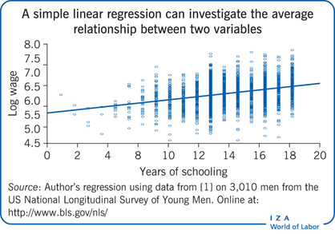
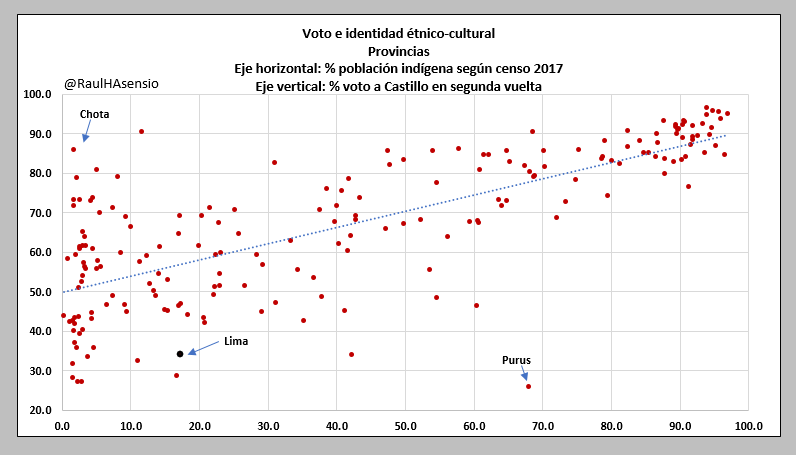

Introducción
El tema de la semana es la correlación y a la regresión lineal
simple. Este es un método para analizar la relación entre dos variables
cuantitativas: una dependiente y una independiente.
Recordemos que el método del chi-cuadrado se trataba de analizar la
relación entre dos variables cualitativas. La prueba t y ANOVA tienen
una variable dependiente cuantitativa y una variable independiente
cualitativa. La correlación es una extensión de esta serie de
relaciones. El método de regresión lineal es un método generalizado,
que, luego veremos, incluye a la prueba t y a ANOVA.
La correlación se trata de la evaluación del cambio sistemático en
las puntuaciones de dos variables numéricas (discretas o continuas, de
intervalo o de razón).
Con el método de la regresión lineal se puede responder las
siguientes preguntas:
Analizar si hay una asociación entre las
variables mediante un test de independencia estadística.
Analizar la dirección de la asociación (directa
o inversa).
Evaluar la fuerza de la asociación usando una
medida de asociación llamada correlación de
Pearson.
Estimar una ecuación de regresión que “predice”
los valores de la variable dependiente para valores de la variable
independiente.
Espacio cartesiano
Se trata de un espacio formado por dos ejes perpendiculares, el eje X
(horizontal) y el eje Y (vertical). Cada uno de estos ejes se puede
tratar como una regla donde se pueden mapear variables.
Por ejemplo:
En el eje X se puede mapear la variable edad (variable numérica
discreta). La regla podría partir desde cero si se recoge información
que incluye a niños o podría partir desde 18 si se recoge información de
mayores de edad.
En el eje Y se puede mapear la variable estatura (variable
numérica continua).
Si se combinan ambos ejes se forma el espacio, donde cada
individuo estará mapeado, con sus datos de peso y de estatura como
coordenadas de ubicación en este espacio.
El conjunto de individuos (o puntos) formará una “nube” de puntos
en este espacio. Este tipo de gráfico se llama Gráfico o Diagrama de
Dispersión.

Ahora presentaremos un ejemplo más político. Esta base incluye
información a nivel departamental, sociodemográfica y electoral de 2016,
todas variables numéricas.
library(rio)
data = import("bases/voto2021_v2.xlsx")
Para empezar usaremos dos variables para general el gráfico de
dispersión:
library(ggplot2)
ggplot(data, aes(x=Analfabetismo, y=VotoPL_1))+
geom_point()+
geom_text(data=data, aes(label=Departamento),
cex=2, nudge_y = 1.1, check_overlap = T)+ #Pata etiquetar los puntos, darles un tamaño, ubicación y prevenir que se sobrepongan
labs(x="Porcentaje de analfabetismo",
y="Voto a Perú Libre (1era vuelta)")+ #para etiquetar los ejes
theme_light()

Esta “nube” de puntos nos dan una idea visual de la probable relación
entre las variables. En estos casos vemos que las variables forman un
patrón ascendente positivo: a medida que los departamentos reportan un
mayor tasa de analfabetismo, también se observa un mayor porcentaje de
voto a PL en 2021.
Por ejemplo, en el libro “El Profe” (IEP, 2021) se examina la
relación entre el porcentaje de población autoidentificada como indígena
y el voto a Pedro Castillo. El gráfico que se obtiene a nivel provincial
es.

Cuando se trabaja con bases de datos con muchas más observaciones, a
veces no es fácil distinguir una tendencia en la “nube” de puntos. Dado
que nuestra percepción tiene esos límites, confiamos en el modelamiento
mediante una relación lineal para el establecimiento de relaciones.
Relación lineal
Esta probable relación entre estas dos variables se
resumen/simplifica mediante una aproximación lineal. Es decir, mediante
una recta de aproximación.
Ecuación de la recta
Se tiene que recordar que una recta tiene la forma \(Y = a + bX\), donde “a” es la constante y
“b” es la pendiente. Cualquier recta puede ser graficada con diferentes
valores de a y b.
La relación entre las variables depende de la pendiente:
Si b es positivo, Y aumenta cuando X aumenta. Es una relación
directa / positiva.
Si b es negativo, Y aumenta cuando X disminuye. Es una relación
inversa / negativa.
Si b es cero. Y no cambia cuando X varía. No existe relación
entre las variables.
Como dijimos, la “nube” de puntos se modela mediante una recta. Esta
recta de aproximación tiene la forma \(\hat{Y}
= \hat{\alpha} + \hat{\beta}*X\)
Los valores que tiene el “sombrero” son datos que se calculan con los
datos observados. Una vez estimados estos valores (se verá la lógica en
un momento), se puede estimar un Y (por eso tiene también “sombrero”)
para cualquier valor de X.
En nuestro ejemplo, se le puede pedir a ggplot que
incluya la recta de aproximación en el gráfico de dispersión mediante el
comando geom_smooth(method=lm, se=F), que se usa para
calcular un modelo lineal (que veremos en un momento)
ggplot(data, aes(x=Analfabetismo, y=VotoPL_1))+
geom_point()+
geom_smooth(method=lm, se=F)+ #agregar línea de tendencia
geom_text(data=data, aes(label=Departamento),
cex=2, nudge_y = 1.1, check_overlap = T)+ #Pata etiquetar los puntos, darles un tamaño, ubicación y prevenir que se sobrepongan
labs(x="Porcentaje de analfabetismo",
y="Voto a Perú Libre (1era vuelta)")+ #para etiquetar los ejes
theme_light()
## `geom_smooth()` using formula =
## 'y ~ x'

¿Cómo se calcula que ESA es la recta de aproximación, y no otra? La
recta calculada se define como aquella que minimiza los residuos.
Residuos o errores
Se trata de la diferencia entre el valor observado y el valor
calculado por la recta: \(Y -
\hat{Y}\)
Es decir, cada observación tiene un residuo, que sería visualmente,
la distancia vertical del punto a la recta de aproximación.
#Este código de abajo no se evaluará
plot(data$Analfabetismo, data$VotoPL_1,
xlab="Porcentaje de analfabetismo por departamento",
ylab="Voto a PL (1era vuelta)",
pch=19, xlim=c(0,15), ylim=c(0, 55))
abline(lm(data$VotoPL_1 ~ data$Analfabetismo))
fitted = predict(lm(data$VotoPL_1 ~ data$Analfabetismo))
for (i in 1:25) {
lines( c(data$Analfabetismo[i], data$Analfabetismo[i]), c(data$VotoPL_1[i], fitted[i]), col="blue")
}

Cada punto se aproxima o se aleja más de la recta de aproximación.
Estas distancias se pueden sumar para darnos una idea de qué tan bien
esta recta “resume” la distribución de los datos.
Se define la recta de aproximación como la recta que minimiza esta
suma de residuos. Es decir, cualquier otra recta tendría una mayor suma
de esas líneas azules. Esta recta tiene una ecuación de la recta, con
una constante y una pendiente específica. De manera formal la suma se
hace de los residuos al cuadrado para evitar los valores negativos.
Para esto se tiene que calcular el modelo lineal con el comando
lm, y esto modelo se guarda en un objeto “modelo1”.
modelo1 = lm(data$VotoPL_1 ~ data$Analfabetismo)
summary(modelo1)
##
## Call:
## lm(formula = data$VotoPL_1 ~ data$Analfabetismo)
##
## Residuals:
## Min 1Q Median 3Q Max
## -21.023 -9.442 -4.795 9.798 19.872
##
## Coefficients:
## Estimate Std. Error t value Pr(>|t|)
## (Intercept) 6.5710 5.1709 1.271 0.216516
## data$Analfabetismo 3.0273 0.6716 4.507 0.000159 ***
## ---
## Signif. codes: 0 '***' 0.001 '**' 0.01 '*' 0.05 '.' 0.1 ' ' 1
##
## Residual standard error: 11.85 on 23 degrees of freedom
## Multiple R-squared: 0.469, Adjusted R-squared: 0.4459
## F-statistic: 20.32 on 1 and 23 DF, p-value: 0.0001589
Recta de aproximación
Los primeros datos a analizar están en la columna “Estimate”. Estos
datos definen la ecuación de la recta. Según estos datos se tendría
\[\hat{Y} = 6.57 + 3.03*X\]
Modelo lineal
Como indicamos, la relación entre dos variables cuantitativas se
modela mediante una recta de aproximación. Para evaluar una relación
entre dos variables numéricas, tenemos que responder las siguientes
preguntas:
Predicción
Con esta ecuación se puede estimar el valor de Y (es
decir, el voto a PL) para cualquier valor de X (de analfabetismo).
Por ejemplo, en Amazonas se tiene 8.03% de tasa de analfabetismo,
según la base de datos. De acuerdo a la ecuación, el voto estimado a PL
sería 6.57 + 3.03*8.03 = 30.9%.
El voto observado a PL en Amazonas fue 26.1%. Por lo tanto, el
residuo de esta observación es 26.1-30.9 = -4.8. Este es el error de
predicción.
El voto predicho a PL no solo se puede calcular para los valores
observados de acceso a internet, sino también para cualquier valor de
X.
¿Cuánto sería el voto predicho a PL en un departamento con cero
analfabetismo? ¿cuánto sería el voto predicho a PL en un departamento
con total analfabetismo?
Estas dos preguntas implican el cálculo de \(\hat{Y}\) para cuando X=0 (en la primera
pregunta) y para cuando X=100 (en la segunda pregunta). En la realidad
no tenemos dos departamentos con estos valores de X, pero estos se
pueden predecir a partir del modelo generado.
Correlación no es causalidad
Que se pueda graficar los datos de dos variables en un espacio
cartesiano y que se pueda calcular la mejor recta de aproximación NO
significa que ambas variables necesariamente están relacionadas o que
haya una relación de causalidad.
Para establecer una relación de causalidad hace falta:
Que haya consistencia entre varios estudios: un estudio (casi)
nunca es suficiente para definir un hallazgo. La convergencia entre
diferentes estudios (en diferentes lugares y tiempos) le da mayor
robustez a la relación entre dos variables.
Que haya una (fuerza de) asociación: que existe una correlación
es un primer paso para poder luego evaluar una probable causalidad. La
relación es una estadística y no una relación determinista.
Un mecanismo: una explicación basada en la teoría que defienda
porqué es plausible hablar de una probable relación entre esas dos
variables.
Temporalidad: que la causa preceda al efecto. Es decir que la
medición del X sea anterior a la del Y. En nuestro ejemplo, no se podría
hablar de causalidad si el X hubiera sido medido antes de 2021.
Un ejemplo que cumple estas condiciones es la relación entre consumo
de tabaco y desarrollo de cáncer de pulmón.

Para establecer una relación de causalidad entre ambas variables se
han realizado múltiples estudios, se tiene una relación estadística
robusta, se tiene un mecanismo en la nicotina y se tiene una secuencia
temporal, se fuma y luego se desarrolla el cáncer de pulmón.
Por ejemplo, puede existir una correlación entre el consumo de
chocolate en un país y el número de premios Nobel que cuente ese país.La
pregunta es cuál es el mecanismo explicativo entre una variable y la
otra. Pueden ver más correlaciones
locas es este link.

En algunos casos, la relación entre dos variables en realidad es
explicada por una tercera variable. En este tipo de casos se habla de
correlaciones espúreas. Por ejemplo:

De manera más gráfica:

¿Existe una asociación o relación entre las variables?
Según estos resultados la ecuación de la recta es:
\[\hat{Y} = 6.57 + 3.03*X\]
En esta ecuación, el dato que marca la relación entre ambas variables
es la pendiente. El \(\hat{\beta} =
+3.03\). Este dato es una aproximación desde los datos del
“verdadero” valor de \(\beta\). Como
toda aproximación a partir de datos, este valor de \(\hat{\beta}\) tiene un error estándar y por
lo tanto un intervalo de confianza de posibles valores del parámetro
poblacional. Con el estimado y el error estándar se puede usar la
distribución t para inferir a la población.
La H0: \(\beta = 0\)
La HA: \(\beta \not= 0\)
Es decir, se pone a prueba cuál es la probabilidad de observar una
pendiente de 3.03 si la “verdadera” pendiente es cero. Esta probabilidad
se mide, como siempre, con el p-value (o Pr(>|t|), en la tabla de
resultados).
En la fila correspondiente a la variable independiente se observa que
el p-value = 0.000159 (o 0.0159%). Es decir, que tenemos muy bajas
probabilidades de observar una pendiente de 3.03 si la verdadera
pendiente es cero. Como este valor es menor a 0.05, se puede rechazar la
H0.
Con esto se concluye que se puede decir que SÍ hay una (cor)relación
entre ambas variables.
Dirección
La dirección de la relación entre las variables está marcada por el
signo de la pendiente. Si el signo es positivo, la recta de aproximación
tiene pendiente positiva y eso indica una relación positiva entre las
variables (a mayor X, mayor Y). Si el signo es negativo, la recta de
aproximación tiene una pendiente negativa y eso indica una relación
negativa entre las variables (a mayor X, menor Y).
En nuestro ejemplo, la pendiente (es decir, el valor de \(\hat{\beta}\)) es positiva. Eso quiere
decir que departamentos que presentan mayores tasas de analfabetismo,
reportan, en promedio, un mayor voto hacia Pedro
Castillo.
Coeficiente de correlación de Pearson
El valor de \(\hat{\beta}\) indica
la tasa de cambio, es decir, por cada unidad de cambio en X, Y cambia
\(\hat{\beta}\) unidades. En nuestro
ejemplo, por cada 1% de aumento en la tasa de analfabetismo, el voto a
Pedro Castillo cambia 3%.
Pero la pendiente no es un buen indicador de la relación entre las
variables, pues depende de las unidades de medida de las variables. Para
poder evaluar la relación entre las variables, requerimos una versión
estandarizada de la pendiente, que mida el cambio en unidades de
desviación estándar.
Esta medida es el coeficiente de correlación de Pearson. Este
coeficiente no solo mide el cambio entre las variables en unidades de
desviación estándar, sino también el grado de ajuste de los puntos a la
recta. Este coeficiente tiene las siguientes características:
El coeficiente r de Pearson varía entre -1 y +1. El coeficiente r
tiene el mismo signo que la pendiente.
r=0 si la pendiente también es cero.
r=+1 o r=-1 si todos los puntos caen en la línea de predicción.
Es decir, que la predicción es “perfecta”. Esta situación es hipótetica,
nunca se da con datos en ciencias sociales.
En nuestro ejemplo r=0.685. Es decir, por cada unidad de desviación
estándar de cambio en X, Y cambia 0.685 desviaciones estándar.
cor.test(x=data$Analfabetismo, y=data$VotoPL_1, method="pearson")
##
## Pearson's product-moment correlation
##
## data: data$Analfabetismo and data$VotoPL_1
## t = 4.5073, df = 23, p-value = 0.0001589
## alternative hypothesis: true correlation is not equal to 0
## 95 percent confidence interval:
## 0.3972054 0.8499737
## sample estimates:
## cor
## 0.6848503
Para tener una idea acerca de cómo interpretar este valor, la
siguiente imagen muestra ejemplos de distribuciones de puntos a
diferentes valores de r.

Como se observa, a medida que el valor de r se acerca a 1, los puntos
se encuentran más alineados a la recta de predicción, por lo que habría
menos residuos, llegando a cero, con puntos completamente ajustados a la
recta.
A medida que el valor de r se acerca a cero, los puntos se vuelven
más dispersos, formando una nube de puntos. Esos puntos se ajustan menos
a una recta de predicción.
Para tener una idea más lúdica de la distribución de puntos a
diferentes valores del coeficiente de Pearson, pueden entrar a este link
de Guess the Correlation,
que “gamifica” acertar con el valor de r para diferentes dispersiones de
puntos.
Coeficiente de determinación \(R^2\)
En el contexto del análisis de regresión lineal, también se analiza
qué tan bien X predice Y. Esta capacidad de X de predecir la variable Y
se mide mediante el coeficiente de determinación \(R^2\). Este valor no es otro que el
cuadrado del coeficiente de Pearson.
Pero, se interpreta como la reducción proporcional en el error al
usar la recta de predicción, en lugar de sólo usar \(\bar{Y}\) (el promedio de Y) para predecir
Y.
Se tiene que recordar que los errores (o residuos) son las distancias
de cada punto a la recta. Cada punto tiene una distancia a la recta de
\(\bar{Y}\) y también una distancia a
la recta de predicción.
En la imagen de la izquierda, se muestran las distancias de los
puntos a la recta de \(\bar{Y}\). Todas
estas distancias al cuadrado se pueden sumar. Esta suma es E1.
En la imagen de la derecha, se muestran las distancias de los puntos
a la recta de predicción \(\hat{Y}\).
Todas estas distancias al cuadrado se pueden sumar. Esa suma es E2.

Entonces, \(R^2 =
\frac{E1-E2}{E1}\). Este cálculo es igual al cuadrado del valor
de la correlación. Por lo tanto:
\(R^2\) varía entre 0 y
1.
\(R^2=1\) implica que E2 = 0, es
decir que todos los puntos caen en la recta.
\(R^2=0\) si la pendiente es
cero.
En nuestro ejemplo, \(R^2=0.47\).
Este valor se encuentra en la penúltima fila del summary
del modelo, con el nombre “Multiple R-squared”. Es decir, el modelo
reduce un 47% el error de usar solamente el promedio para estimar Y.
Validez del modelo
La última fila del summary muestra los resultados de una
prueba F, con un estadístico de la prueba y un p-value. Esta prueba es
la que nos indica la validez del modelo en su conjunto.
Cuando analizamos relaciones bivariadas, este p-value es igual al
p-value de la pendiente, por lo que la validez se determina con
cualquiera de ellas.
Vamos a ver en la siguiente sección de análisis multivariado que el
análisis de la prueba F es el primer paso, que indica la validez del
modelo multivariado, y que se tiene que realizar antes de analizar los
siguientes pasos, de relaciones, direcciones y fuerza.
